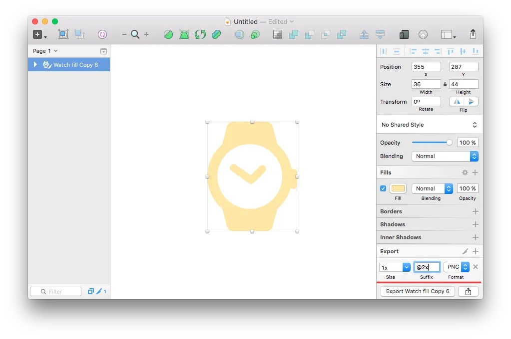
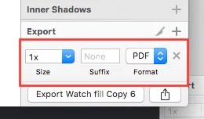
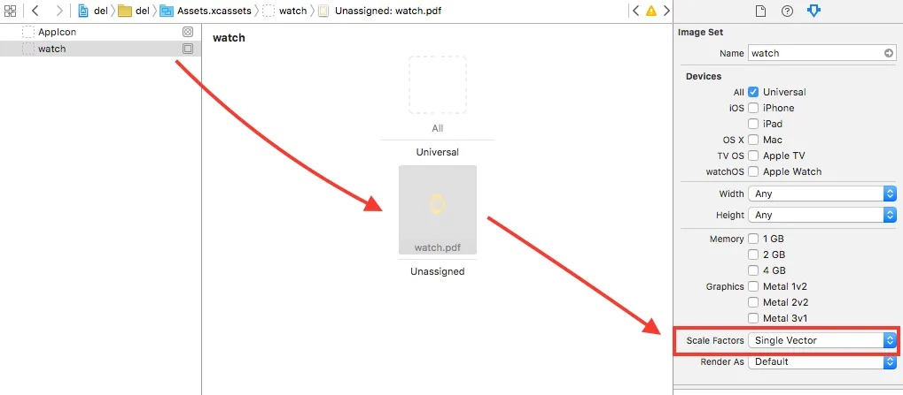
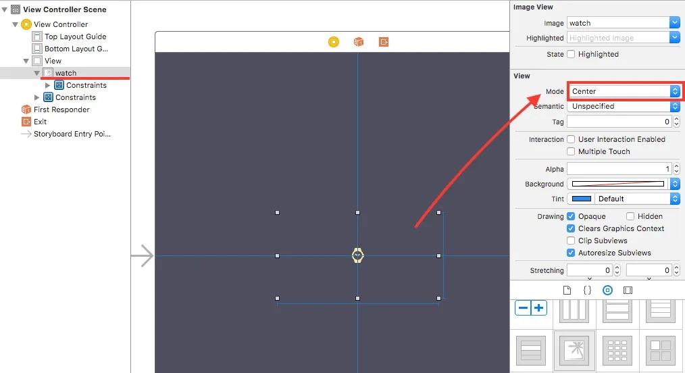
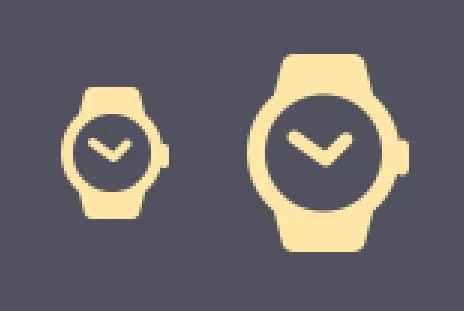
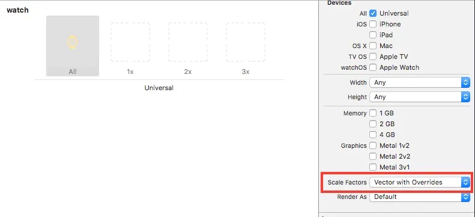
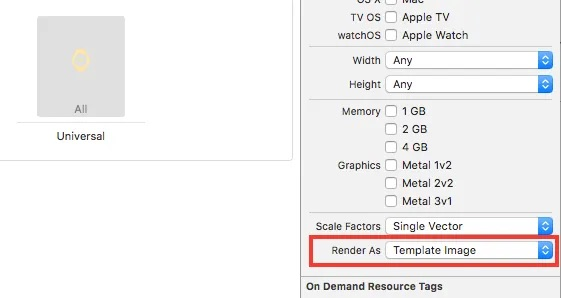
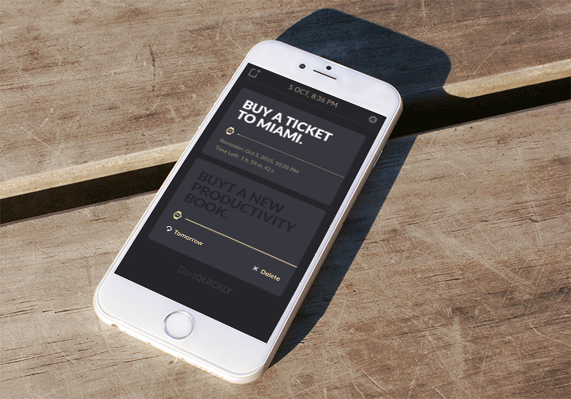

How to Use PDF’s as Icons Source in Xcode
I just tried some tests about PDF as graphic source for iOS apps and want to share results with you.
I want to use vectors in the world full of different screen resolutions because it will reduce design and development time. The modification time also decreased. In the old iOS development days we have to support @1x, @2x, @3x graphics, which required some additional manual work, but thanks Xcode PDF support we can use 1 vector file instead 3 PNG. Now the question: how to make it right.
How to use PDF vector graphics in Xcode for iOS apps
First, you have to make right source file to export in PDF by using Sketch (I don’t try in other apps).
Wrong way: you set iPhone device size as 750✕1334 and draw icons according to this size. Later you export result as PNG 1:1 and name it @2x. It will work fine only for PNG’s, but not for PDF’s.

Right way: you have to draw for @1x size first. Make the graphics pixel-perfect and only then export it as PDF. You can also try export size as 0.5x, but result can be unpredictable.

- Add this PDF file to Xcode assets catalog
- Change the image scale factor to “Single Vector”. If your source image was designed pixel-perfect for @1x most likely it will be fine scaled up for 2x and 3x. If you see any aliasing problems with 2x go back and align your icon graphics to be

- Drag unassigned image to universal
- In the Interface Builder change image view mode to Center

Result:
Left: @2x, right: @3x.

Important note: your UIImage or UIButton width and height constraints can be bigger then PDF original size, but if the PDF object size bigger than width and height you will get blurred image, despite the fact that PDF is a vector.
Sometimes though some details can be scalled wrong. In this case in the Assets catalog change scale factor to “Vector with Overrides” and provide PNG version for specific resolution.

By using PDF’s you still able to redraw image color by tintColor if you change its render settings to “Template Image”:

We used this technique in our DoitQUICKLY app. All icons in the app are PDF’s.
